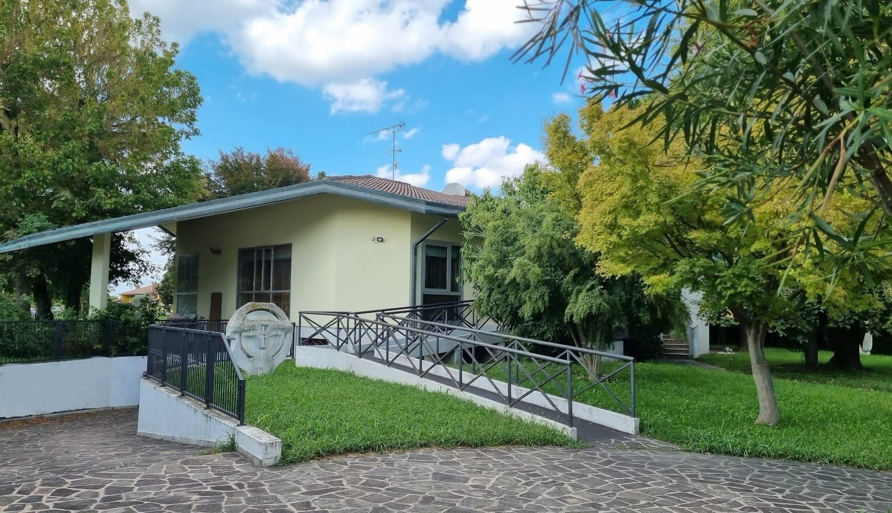
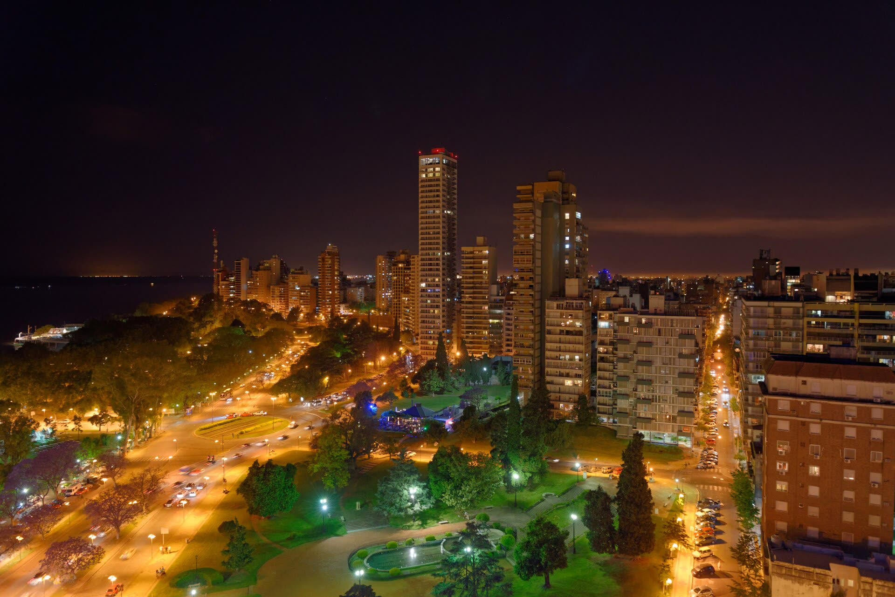

Más de 1.500 policías y agentes en 15 villas al mismo tiempo.
Fuente: GCBA, comunicado oficial
0 detenidossegún el GCBA
11 por venta3 tenencia · 2 robo · 1 captura
6 ya libresal poco tiempo · según Página/12
335 dosissecuestradas en la Villa 31
Expediente N° 001
Todos saben dónde se vende.
¿Por qué nadie lo cierra?
el vecino
el remisero
el pibe de 15
PISTA 1A quién se detiene
Causas federales por drogas · 2011–2018
187.398 causas
89.131 tenencia
Gente con algo encima. No organizaciones.
Fuente: PROCUNAR, citado por el CELS
Fuerzas federales
0 de 10
causas arrancan en la calle: patrullaje · denuncia anónima · flagrancia.
Fuente: CELS, “La guerra contra el narcotráfico”
La red se tira en la orilla
plata
rutas · logística
el peón
Se reemplaza en un díafoto + cifra + titular = la estructura ni se entera
PISTA 2La plata
Precio de 1 kilo de cocaína en cada tramo
Bolivia
US$2.000
Frontera Salta
US$2.800
Interior del país
~US$4.000
España
€30.000
Fuente: La Nación (feb-2026), vía Periodismo 365. Valores aproximados.
×15
Condenas por lavado · ene-2019 a mar-2024
0
en todo el país. El GAFI: “bajo para un país de su tamaño”; la mayoría, esquemas simples.
Fuente: Informe de Evaluación Mutua GAFI/GAFILAT 2024
2 Ferrari · 4 años sin remate
Foto ilustrativa: A. Migl · CC BY-SA 4.0
El Estado paga el seguroD. Iglesias (PROCUNAR), Infobae 30/06/2024

Italia · bien confiscado
L. Viezzer · CC0
Italia: +18.000 bienes de la mafia con uso socialcooperativas · centros culturales · clubes — Libera, 2025
PISTA 3Quién cuida la puerta
Justicia federal · Lomas de Zamora
Daniel Aste
Comisario mayor · jefe de lucha contra el narcotráfico · detenido en 2023
Según la acusación de la Fiscalía Federal (La Nación, 09/05/2024). Él lo niega.
Acusado · espera juicio

Rosario
N. Kolus · CC BY-SA 3.0
Los Monos · 20189 de fuerzas de seguridad, condenados
Banda Alvarado7 policías condenados (abreviados)
No eran infiltrados: estaban en servicio
PISTA 4Quién firma
Tribunales
Elsapucai · dominio público
Juez federal · Orán, Salta
Raúl Reynoso
cobraba a imputados por beneficios en sus causas
13 años · confirmada
TOF 1 Salta 2019 · Casación 2023
Juez federal · Mendoza
Walter Bento
jefe de una banda de coimas a acusados de contrabando y narcotráfico
18 años · feb-2026 · apela
TOF 2 Mendoza, febrero 2026
Jefe de fiscales · Rosario
Patricio Serjal
cobraba para dar impunidad al juego clandestino
9 años · confirmada jul-2026
Tribunal de Rosario nov-2025 · Cámara jul-2026
Ex juez federal · Rosario
Marcelo Bailaque
acusado, entre otras cosas, de no habilitar escuchas en causas contra Alvarado. Renunció en 2025.
piden 10 años
Sin condena: rige la presunción de inocencia
Condenado
Condenado
Condenado
Sin condena
JUE 24·09·2026 — 18:00 hs
OPERATIVO TORMENTA NEGRA
0
POLICÍAS
0
VILLAS
PERROS · DRONES · PATRULLEROS
Foto: ProtoplasmaKid · CC BY-SA 4.0
Lo obvio
El búnker existe.
Lo conectado
Que todos lo vean y nadie lo cierre necesita que alguien no lo vea.
No siempre. No todos. Pero los suficientes.
El sistema tiene anticuerpos. Pero llegan tarde.
SERJAL
2020 · renuncia investigado
2025 · condena
BENTO
2020 · cae Bardinella, empieza la causa
2026 · condena
¿Dónde se nos escapa? Medimos mal.
Lo que contamos
detenidos
dosis
operativos
Lo que de verdad duele
cuentas congeladas
propiedades decomisadas
rutas cortadas
funcionarios investigados
¿Dónde atacar?
1
La plata
Cada causa grande, por el patrimonio. Lo decomisado, en uso rápido, como en Italia.
2
Los que controlan
Declaraciones juradas y asuntos internos de verdad en zonas calientes.
3
Para arriba
Ley Antimafia 27.786 (2025): sin juicio abreviado en crimen organizado. Usarla con los que firman.
4
Nosotros
Cada dosis paga un sueldo: · el del peón · el del que cuida la puerta · el del que mira para otro lado
No cuentes detenidos.
Preguntá cuánta plata se congeló.
Todos saben dónde se vende.
En tu barrio, ¿todos saben dónde se vende?
Contalo en los comentarios. Sin nombres, sin direcciones.
Fuentes completas en la descripción. Las personas acusadas sin condena firme son inocentes hasta que se pruebe lo contrario. Fotos ilustrativas con licencia libre (Wikimedia Commons).
EXPEDIENTE N° 001 · TODOS SABEN DÓNDE SE VENDE● REC
Presunción de inocencia: quien no tiene condena firme es inocente hasta que se pruebe lo contrario.